tape tests
This is part 4 of 4 of the React Native series.
Part 1 - Try RN | Part 2 - RN/Firebase snapshots
Part 3 - RN/Firebase updates | Part 4
Tape testing is a powerful and minimalistic framework that is helpful for testing within asychronous environments! Tape testing in React Native works like a dream. Well...more like a dream in the way that Inception was a dream. The real problem with writing asynchronous tests is often you are exploring what exactly the test needs to be, and using Nodemon with Node helps you see the tests coming into place.
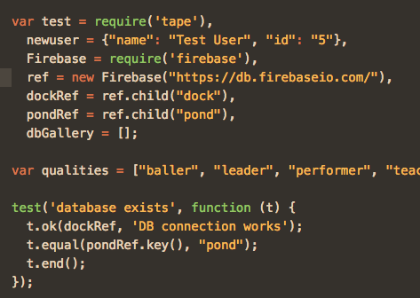
Tape uses the TAP method of outputting testing information. This is a standard rubric sort of for what information should be in tests and should not be in tests. Tape can be included in your files with a require statement. You can pipe test results through other tools to create a more visual output, but it's pretty readable as is. Here's the suite output (which outputs to terminal via Node and Nodemon) from my newUser tests in ReactNative/Firebase project.
As I began writing this article out, I realized this was much more about the complicated nature of testing firebase results due to the snapshot nature of the listener. Rather than rely on automated testing, I found myself sending console logs out in each snapshot rather than rely on testing, because each update will create new information, it's inherently better than a test, which only provides a one time insight.
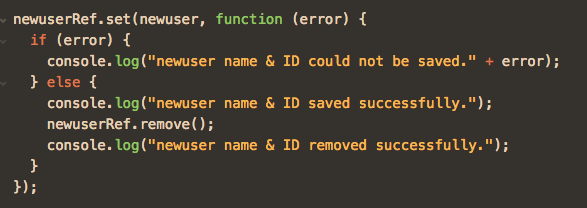
Or view the console as a callback...
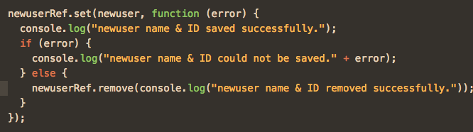
Another reason why using node and nodemon is helpful, we have something continuously watching, after a test suite would normally finish. The square below indicates that terminal is still engaged with the file and the moment another change takes place I will see it.
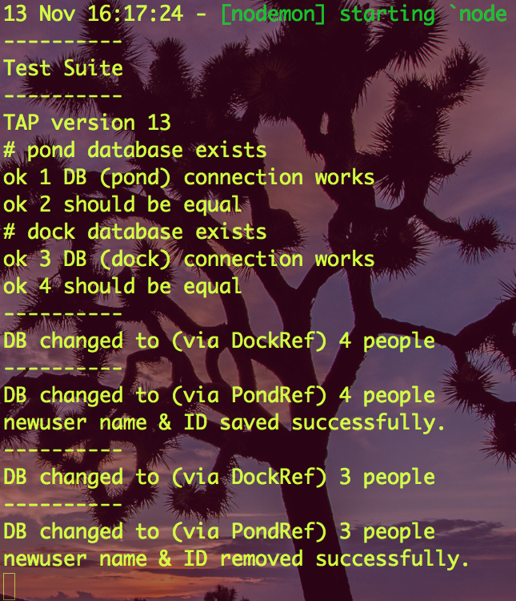
As I develop the test, I get to adjust the location of my firebase references and I can see the test suite and it's asychronous wrinkles with really impressive detail. You can see an immediate change the output simply by reversing the order of the listeners.
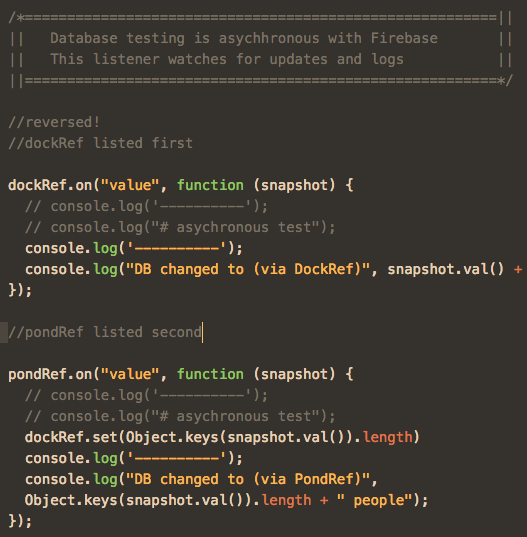
For some reason, the output here includes an additional dockRef snapshot. Strange right? This is because Firebase sends a once initial snapshot and a update snapshot, which can be difficult to test around. With two listeners in place, and one update will lead to four separate updates, as we see in the above file. Below, we will see five updates, the dockRef's once, followed by the pondRef's 1st, which updates the 1st dockRef update (2nd overall), leading to a 2nd dock ref update (3rd overall), then the newUser which leads to the pond updating the dock one last time. (4th and 5th overall) update. I attempted to attach the test to the snapshot listener but haven't found a way yet! Ideas?
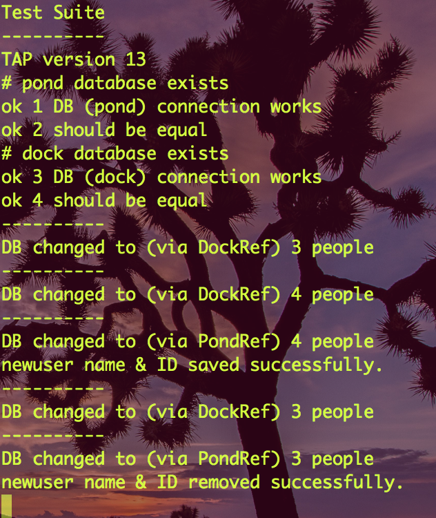
The real cool power of using Nodemon and Tape together is the advanced output that comes with both. A syntax error can be differentiated quite readily from a failed test, which sometimes can allude you when simply logging out information.
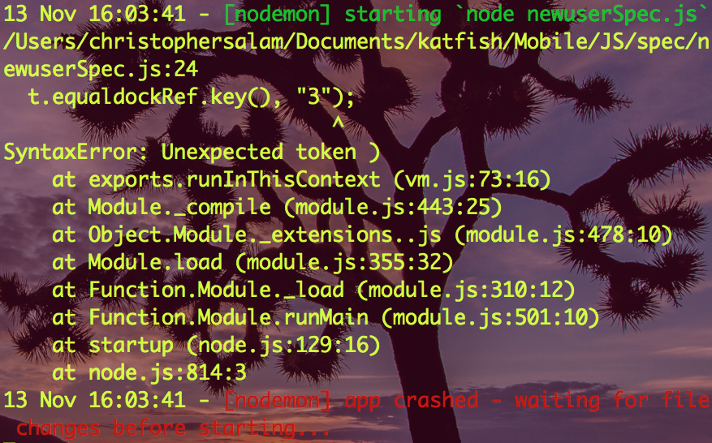
And here's the difference with a failed test! It would show up with nice red and green output if we tapped it one of the frameworks for TAP output.
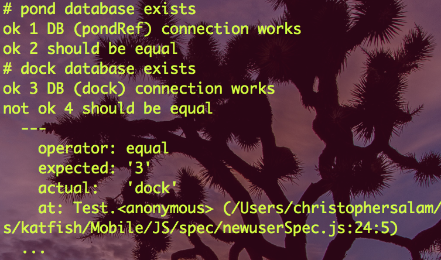
I hope this was helpful! There's lots of other helpful aspects of tape, but the real value is that you can write files, run them on Node, see the output, then go back to writing. You can also placed tests into your live files, and comment them out if needed. Very helpful.
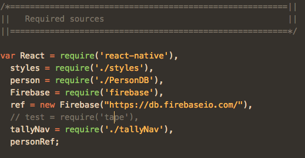
This is mostly unrelated, but the Firebase UX is truly special. This a set of pings with milliseconds in between, but Firebase is kind enough to show all the changes, green for addition and red for removal. Very cool! It was harder to capture these screenshots than it was to set up this testing suite! Yay for tape!
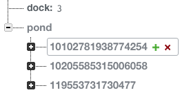
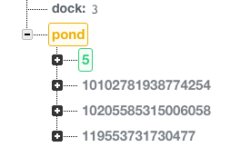
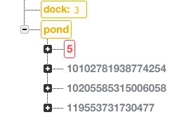
This is a stub... there's more to come